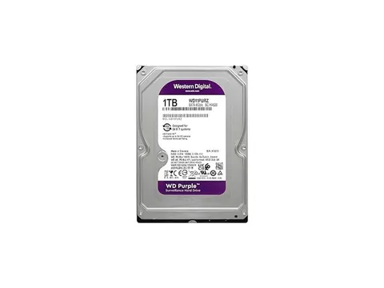

Cámara ColorVu 2MP
Cámara ColorVu 2MP Control de acceso facial
Control de acceso facial Switch Pro Max 24 PoE
Switch Pro Max 24 PoE Router empresarial
Router empresarial UPS 600VA
UPS 600VA
Disco Purple 1TB
Tienda en línea
Equipo profesional de marcas líderes, con garantía y soporte local.
- Precio a la vista
- Factura electrónica
- Envío o retiro